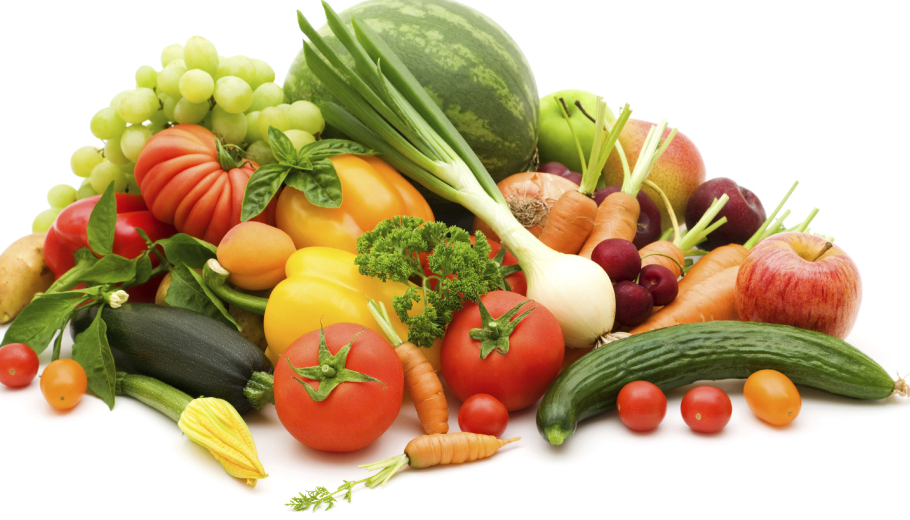

We should all aim to eat a healthy, varied diet based on the principles of the Eatwell Guide, which matches our energy needs. This advice still applies when taking part in regular physical activity, such as going to the gym, swimming, running, cycling or team sports. Following healthy eating guidelines alone can support an active lifestyle. However when exercising, your body will use up more energy. Unless you are trying to lose weight you may find that you need to eat more food to give your body the extra energy it needs. Eating well for physical activity and sport can have many benefits including: Allowing you to perform well in your chosen sport or activity; Reducing the risk of injury and illness; Ensuring the best recovery after exercise or a training programme. A healthy diet for sport and exercise should contain plenty of starchy foods, plenty of fruit and vegetables, some protein foods and some dairy foods. It is also important to stay hydrated.
